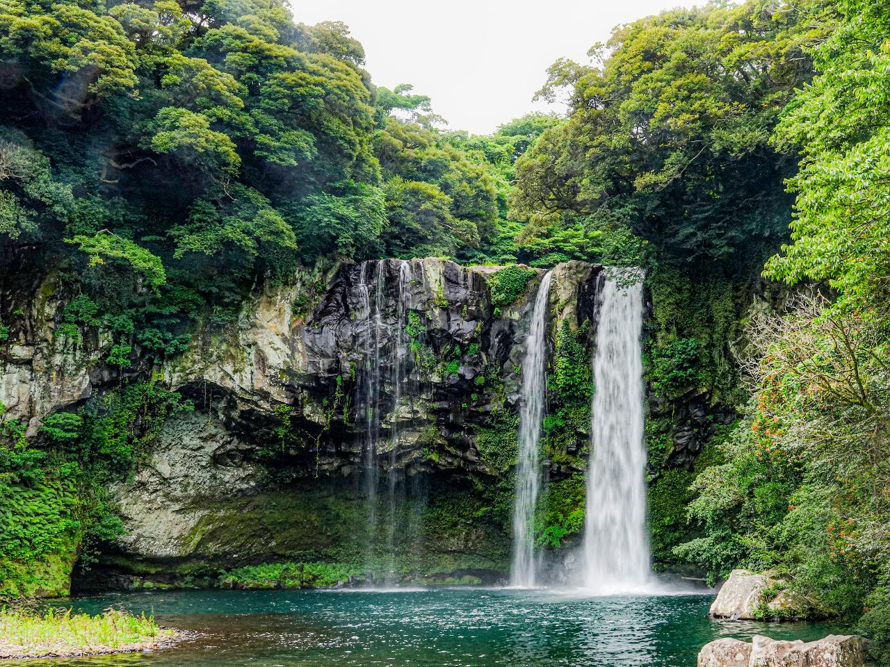

쉼(Healing)의 공간으로 안내합니다
탁 트인 바다, 시원한 바람에 몸을 맡기고 뚜벅뚜벅 오름을 오르고
올렛길을 걷다보면 온전히 나에게 집중할 수 있습니다.
상세 일정
여행 기간: 2박 3일 여행 일정: (여행 일정은 상담을 통해 결정 및 조정
가능합니다)
모험과 스릴이 넘치는 레저의 천국으로 안내합니다.
둘러보기만 하는 여행을 하셨나요? 하늘을 날며 시원한 바다를
내려다보는 패러글라이등과 투명한 물빛 속을 여행하는 스킨스쿠버...
아름다운 제주 해안도로를 씽씽 전동바이크나 전동킥보드로 달려보세요.
시원한 바다를 가까이에서 느낄 수 있는 요트 체험과 배낚시도 빼놓을 수
없겠죠?